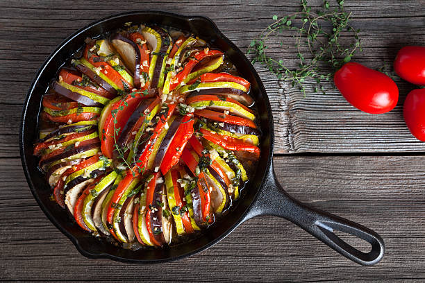

Ratatouille

Description
Ratatouille is a French dish consisting of eggplant, tomatoes, green peppers, squash, and sometimes meat.
Ingredients
- tomatoes
- eggplant
- squash
- marinara sauce
- onion
- olive oil
- fresh parsley
- dried thyme
- basil
- garlic
Directions
- Pour marinara sauce into a circular pan.
- Slice the eggplant, squash, and tomatoe until you have several dozens of slices of approximately the same size.
- Assemble the vegetable slices in the pan as seen in the picture above.
- In a separate pan, cook some olive oil, garlic, fresh parsley, dried thyme, and dried basil.
- Drizzle the olive oil mixture across the vegetable slices.
- Cook in the oven for 40 minutes covered with foil, then 20 additional minutes without the foil.